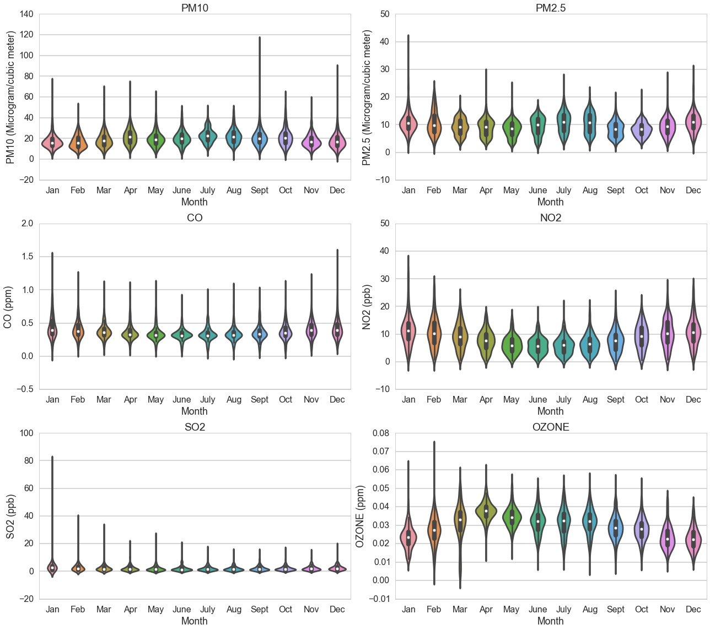

INCLUDE LINK TO VIDEO PRESENTATION HERE
Key Findings
This is where we include some information about the background of the project. We should include a brief description of the 6 pollutants we looked at
Project Background and Motivation
The World Health Organization reported that in 2012 about 7 million people died as a result of air pollution exposure, a finding that was more than double previous estimates. According to the WHO, this finding “confirms that air pollution is now the world’s largest single environmental health risk.” Air pollution can lead to a variety of potentially fatal conditions such as heart disease, stroke, COPD, and lung cancer. Thus it is critical that more research on air pollution causes and interventions to reduce such pollution be done.
As students at the Harvard T.H. Chan School of Public Health, we want to conduct some research into air pollution in the USA as well as on some of the determinants of such pollution such as weather, commuting, and population density given the severity of this public health issue. By understanding the pollutant profiles of various cities, more targeted and effective interventions for reducing pollution on a by-pollutant-type basis could then be proposed and implemented. Linking these specific profiles to certain determinants would also aid in the creation of powerful air pollution reduction policies. These various analyses could be useful for developing legislation across the USA. Additionally, we could predict the pollutant profiles of cities in the third world, where such measuring of pollutants is not available, based on weather, population, etc. Such prediction would allow for better formulation of air pollution reduction policies for those cities.
Initial Questions:
- Are there certain pollutant profiles that characterize groups of US cities?
- What is the distribution of pollutants (air particulate matter, gas levels, etc.) within these clusters?
- What are the determinants (weather, demographics, transportation, etc.) of these pollutant profiles?
- Can we use data on weather, demographics, transportation, etc. to predict a city’s pollutant profiles?
- Can specific policy recommendations be made based on a city’s pollutant profile?
Analysis
Pollutant Data: The six main pollutants included in our analyis are distributed somewhat differently. The violin plots below show the distribution of each pollutant across the months of 2010. The white dot represents the mean of that month whereas the spread of the values is represented by the filled area. While most pollutants remain fairly stable throughout the year, ozone levels seem to increase during the summer months and decrease during the winter. This is because O3 creation can be a product of reactions involving temperature and light. NO2 does the opposite and is higher in the winter months and lower in the summer months. This makes sense given the source of NO2 is fuel combustion which one would expect to increase in colder months. There is an interesting outlier in the SO2 data in January -- one station observed a very high value. This is a station located in Hilo, HI which makese sense given that the greatest source of SO2 are natural emissions from things like volcanoes which are quite prevalent in Hawaii.
Transit Data: The following plot shows the distribution of transportaion modes across different areas. The shading in the back represents the total number of people in the area. The pies have split the percentage of people who commute using each of the transportation styles listed. You can scroll over the individual pies to get the numbers, zoom in and out, or move around the area to better explore the data. In general, the most dominant form of transportation is driving alone.
Relationships Between Pollutants and Other Factors: Given differences in pollutants across these different CBSAs, we can look to see how
Clustering of US cities
Conclusions
We came way with some conclusions
Data Sources
In order to assess the various factors that may influence air quality in urban areas across the United States, 4 main data sources were required:
- Air Quality Data
- Historical Weather Data
- Demographic Data
- Transit Data
Air Quality Data:
Air Quality Data for the various Core-Based Statistical Areas (CBSA's) across the United States were obtained from the EPA's AirData repository. Data was downloaded for the 6 key pollutants for the year of 2010. T
Historical Weather Data:
US weather data was also obtained from the EPA's AirData repository. This includes information of daily temperature, wind speeds, relative humidity, and atmospheric pressure. A secondary source of weather data came from the National Oceanic and Atmospheric Administration (NOAA). Using their FTP site, more detailed breakdown of weather data including wind speeds, temperature, atmospheric pressure, and daily precipitation could be obtained for various stations across the US. This helped fill in missing data and get a finer image of US weather.
Demographic Data:
Demographic information for the CBSA's included in this research came from the US Census Bureau. These files contain information about the total population, the total land area, and the population density of CBSAs in the year 2010, .
Transit Data:
To assess the influence of commuting style on pollutant levels, data on mode of commuting were collected from the 2010 US Census Bureau. These data included breakdown of commuters' modes of transportation into 'Driving Alone,' 'Carpooling,' 'Public Transportation,' and 'Other (Walk/Bike/etc.).'
All raw data can be found at the following link
Navigating the Github Repository
The analysis for this project can be found at the following github repository. The optimal way to navigate the various ipython notebooks is as follows
- DataCollection&Cleaning.ipynb
- ExplotatoryDataAnalysis.ipynb
- PredictiveLinearModeling.ipynb
- UnsupervisedAnalysisPart1.ipynb
- UnsupervisedAnalysisPart2.ipynb